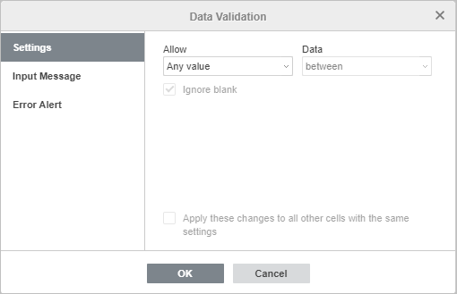
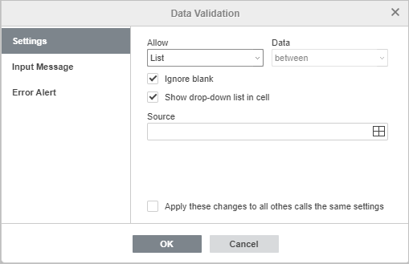
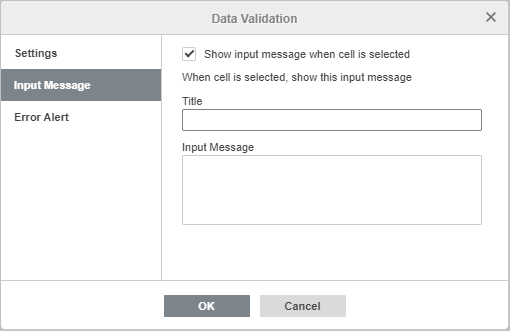
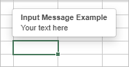
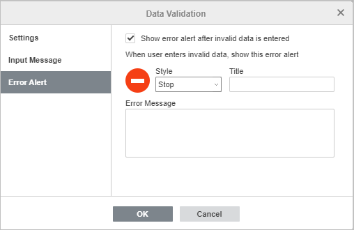
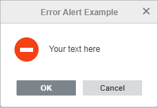

Validacija podataka
ONLYOFFICE Uređivač tabela nudi funkciju validacije podataka koja kontroliše parametre informacija koje korisnici unose u ćelije.
Da biste pristupili funkciji validacije podataka, izaberite ćeliju, opseg ćelija ili celu tabelu na koju želite da primenite ovu funkciju, otvorite karticu Podaci i kliknite na ikonu Validacija podataka na gornjoj traci sa alatkama. Otvoreni prozor Validacija podataka sadrži tri kartice: Podešavanja, Poruka za unos i Obaveštenje o grešci.
Podešavanja
Odeljak Podešavanja omogućava da odredite tip podataka koji može da se unosi:
Napomena: Označite polje Primeni ove promene na sve ostale ćelije sa istim podešavanjima da biste primenili ista podešavanja na izabrani opseg ćelija ili celu radnu tabelu.

-
izaberite željenu opciju u meniju Dozvoli:
- Bilo koja vrednost: nema ograničenja u pogledu tipa informacija.
- Ceo broj: dozvoljeni su samo celi brojevi.
- Decimalni: dozvoljeni su samo brojevi sa decimalnim zarezom/tačkom.
-
Lista: dozvoljene su samo opcije iz padajuće liste koju ste kreirali. Opozovite izbor polja Prikaži padajuću listu u ćeliji da biste sakrili strelicu padajuće liste.

- Datum: dozvoljene su samo ćelije sa formatom datuma.
- Vreme: dozvoljene su samo ćelije sa formatom vremena.
- Dužina teksta: postavlja ograničenje broja karaktera.
- Ostalo: postavlja neophodni parametar validacije zadat formulom.
Napomena: Označite polje Primeni ove promene na sve ostale ćelije sa istim podešavanjima da biste primenili ista podešavanja na izabrani opseg ćelija ili celu radnu tabelu.
-
odredite uslov validacije u meniju Podaci:
- između: podaci u ćelijama treba da budu u okviru opsega koji je postavljen pravilom validacije.
- nije između: podaci u ćelijama ne treba da budu u okviru opsega koji je postavljen pravilom validacije.
- jednako: podaci u ćelijama treba da budu jednaki vrednosti postavljenoj pravilom validacije.
- nije jednako: podaci u ćelijama ne treba da budu jednaki vrednosti postavljenoj pravilom validacije.
- veće od: podaci u ćelijama treba da budu veći od vrednosti postavljene pravilom validacije.
- manje od: podaci u ćelijama treba da budu manji od vrednosti postavljene pravilom validacije.
- veće od ili jednako: podaci u ćelijama treba da budu veći ili jednaki vrednosti postavljenoj pravilom validacije.
- manje od ili jednako: podaci u ćelijama treba da budu manji ili jednaki vrednosti postavljenoj pravilom validacije.
-
kreirajte pravilo validacije u zavisnosti od dozvoljenog tipa informacija:
Kao i:
Uslov validacije Pravilo validacije Opis Dostupno za Između / nije između Minimum / Maksimum Postavlja opseg vrednosti Ceo broj / Decimalni / Dužina teksta Početni datum / Krajnji datum Postavlja opseg datuma Datum Početno vreme / Krajnje vreme Postavlja vremenski period Vreme
Jednako / nije jednakoUporedi sa Postavlja vrednost za poređenje Ceo broj / Decimalni Datum Postavlja datum za poređenje Datum Proteklo vreme Postavlja vreme za poređenje Vreme Dužina Postavlja vrednost dužine teksta za poređenje Dužina teksta Veće od / veće od ili jednako Minimum Postavlja donju granicu Ceo broj / Decimalni / Dužina teksta Početni datum Postavlja početni datum Datum Početno vreme Postavlja početno vreme Vreme Manje od / manje od ili jednako Maksimum Postavlja gornju granicu Ceo broj / Decimalni / Dužina teksta Krajnji datum Postavlja krajnji datum Datum Krajnje vreme Postavlja krajnje vreme Vreme - Izvor: navedite izvor informacija za tip informacija Lista.
- Formula: unesite potrebnu formulu da biste kreirali prilagođeno pravilo validacije za tip informacija Ostalo.
Poruka za unos
Odeljak Poruka za unos omogućava vam da kreirate prilagođenu poruku koja se prikazuje kada korisnik pređe pokazivačem miša preko ćelije.

- Navedite Naslov i sadržaj vaše Poruke za unos.
- Opozovite izbor opcije Prikaži poruku za unos kada je ćelija izabrana da biste onemogućili prikaz poruke. Ostavite označeno da biste prikazali poruku.

Obaveštenje o grešci
Odeljak Obaveštenje o grešci omogućava vam da odredite poruku koja se prikazuje kada podaci koje unesu korisnici ne ispunjavaju pravila validacije.

- Stil: izaberite jedan od dostupnih unapred definisanih stilova, Zaustavi, Upozorenje ili Poruka.
- Naslov: navedite naslov poruke upozorenja.
- Poruka o grešci: unesite tekst poruke upozorenja.
- Opozovite izbor polja Prikaži obaveštenje o grešci nakon unosa nevažećih podataka da biste onemogućili prikaz poruke upozorenja.
